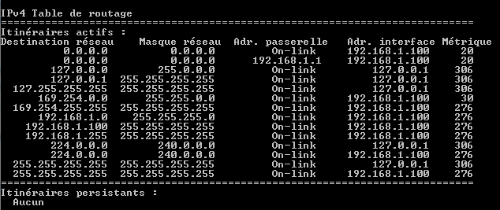

L’article a été mis à jours le 14 Avril 2010.
Si vous recherchez une entreprise de maintenance informatique proposant des services de qualité pour un faible coût, je vous conseille de contacter Turnaway.fr.
Lorsque l’on allume son ordinateur équipé de Windows 7, il arrive que l’on ne puisse pas accéder à Internet alors que tout les autres ordinateurs fonctionnent parfaitement.
Les configurations réseaux sont fournies par un serveur DHCP correctement configuré et testé depuis longtemps.
Les syndromes
Des messages : Réseau non identifié ou Pas d’accès Internet
Ce qui est étrange sur le screenshot ci-dessus, c’est qu’il existe deux “réseaux” sur une seule connexion physique alors qu’il s’agit d’une configuration réseau standard.
L’explication
L’explication se situe au niveau de la table de routage IPv4.

En effet, nous remarquons à travers la table de routage qu’il existe deux routes par défaut. A la limite, cela peut arriver, mais avec une métrique identique cela risque de ne pas fonctionner correctement.
La solution 1 – Temporaire
Voici la solution que j’utilise :
Supprimer les routes par défaut; avec un Invité de commande lancé avec les droits d’administrateur :
1 | route DELETE 0.0.0.0 |
relancer la découverte DHCP
1 | ipconfig /renew |
La solution 2 – Permanente
A ceux qui ont le problème, avez-vous un logiciel Adobe ? Comme Photoshop CS3 ou Flash CS3 ? Si oui, nous avons trouver le fautif !
Adobe CS3 installe un logiciel de découverte réseau basé sur le protocole Bonjour de Apple. Celui-ci lui permet de trouver les serveurs Version Cue qui sont à proximités.
Pour plus d’information sur l’utilisation de Bonjour par Adobe CS3, voici une TechNote en anglais.

Le logiciel est installé sous forme de service ce qui nous permet de le désactiver simplement.
Pour désactiver le service :
- Aller dans le gestionnaire de service : services.msc
- Clique droit sur “la chose” qui commence par ##Id_String1….##, allez dans les propriétés
- Pour Type de démarrage, sélectionner Désactivé
En redémarrant votre ordinateur, vous ne devriez plus avoir le problème.
Nous pouvons signifier que le problème ne touche que les utilisateurs de Adobe CS3 et Windows 7.
Cela s’explique par une implémentation différente de Bonjour au sein de Adobe CS4 et supérieur.


{kind=link}
{kind=link}
{kind=link}
Merci pour cette astuce, mais a chaque redémarrage, je suis obligé de refaire la manip ! y a t il une commande perenne qui éviderait de refaire la commande ?
Je precise que je suis sous windows 7 Rc version intégrale.
merci
Whaou, je ne suis pas tout seul à avoir le problème !
Malheureusement, je n’ai pas encore trouvé de solution qui règle le problème une fois pour toute…
J’attends une mise à jours magique de Windows sans trop d’espoir.
ok merci je recherche de mon coté…sur le site de microsoft peut être ?
En fait il y a une solution “patch” pour les pc fixes.
Le problème actuel, c’est qu’il existe deux sorties vers Internet, dont une est mauvaise.
Les deux sorties ayant la même métrique (et donc la même priorité), Windows ne sait pas la quelle emprunter…
L’idée du patch est donc de mettre une sortie par défaut prioritaire et permanente.
Pour cela, il faut lancer l’invite de commande en mode administrateur.
192.168.1.1 étant l’ip de mon routeur.
Pour les pc portables, la configuration réseau change avec chaque nouveau réseau… Il est donc déconseillé d’effectuer cette opération sur autre chose que des pc Fixe.
Pour ceux qui sont abonnées à cet article, une solution a été trouvée et est expliquée à la fin de l’article.
Un grand merci pour ces explications. La solution 2 (permanente) a parfaitement fonctionné. Merci encore !
Merci pour ces explications. Le fautif pour moi est l’antivirus utilisé, la solution que j ai trouvé est de démarrée mon PC sous linux je me connecte normalement a internet après je redémarre mon pc mais cette fois avec Windows 7 est je me connecte a internet.
Grand Merci !! Chez moi c’était Adobe CS3
Un grand merci, pour moi aussi c’était Adobe CS3 le fautif.
Une solution efficace en tout cas !
Bravo et merci, je n’aurais jamais trouvé cette panne due à CS3!
Merci aussi pour cette solution, CS 3 qui était en conflit.
Je contournais le problème en désactivant la carte puis réactivation. Puis il fallait le trouver ce service avec un nom barbare à la limite de la suspicion malware
Bravo encore
Bonjour a tous. Je dois pas etre douée, je trouve pas le gestionnaire de service et donc je peux pas desactivé ##ld_string….#. Quelqu’un peut m’aider??
Pour ouvrir le gestionnaire de service, Démarrer, exécuter : “services.msc”.
Bjr à tous !! J’ai le mm probleme et j’arrive tjr pas à me connecter sur internet
bonsoir,
je n’avait jamais ce genre de problème avant mais la aujourd’hui je ne pouvais plus me connecté. j’ai voulu faire la sol définitive mas pas de service.mcs??? dans le gestionnaire des taches win alors j’ai desactivé tout les programme sité CS4, adobe, itunes, apple et au redemarrage cela ne fonctionné pas alros j’ai tapé les commande sité et la cela a fonctionné!!! pour je nepeux pas desactivé tout pour ne pas avoir de probléme au prochain demarrage?
cordialement
Bjr a tous j’ai le meme probléme mais j’arrive toujours pas a le résoudre,j’ai pas de CS3 mais j’ai pas bien compris la premiére solution !!
Quelqu’un peut m’aider ?!
Est-ce que c’est just pour CS3 ou Flash CS3 ou bie c’est le cas aussi pour Adobe reader et tout les autres logiciels Adobe ??
Bjr Thomas et merci pour la manip. Tu m’as évité de réinstaller Windows 7. Que l’Eternel t’accorde la Grâce de Le connaitre.
Bonne continuation!
J’ai le problème assez souvent, Le remède est très simple :
1er éteindre l’ordinateur. 2em débrancher la prise de téléphone. 3em débrancher la prise de courant.
4em tout rebrancher.
Aller dans le gestionnaire de service : services.msc
Clique droit sur “la chose” qui commence par ##Id_String1….##, allez dans les propriétés
Pour Type de démarrage, sélectionner Désactivé
Merci depuis le temps que je cherchais
merci merci merci merci…. je viens d’installer la suite CS5 et jamais … mais alors jamais je n’aurais réussi à comprendre pourquoi je n’arrivais pas à me connecter…
Un grand grand grand merci ….
Merci ! Ça fait un bail que j’ai le problème mais là j’en avais vraiment ras le bol (redémarrage du PC 3 fois ce matin !). Moi aussi j’ai CS3, à tout les coups c’est ça aussi… je verrais ce que ça donne au prochain démarrage. En tous cas je n’aurais jamais cherché aussi loin… merci pour la manip !
bonsoir, excusez moi encore de reouvrir ce tuto mais j’ai un petit problème, je n’arrive pas à trouver le ( ##Id_String1….##,) dont on parle.
j’ai regardé ligne par ligne mais rien du tout.
merci de me répondre et encore désolée.